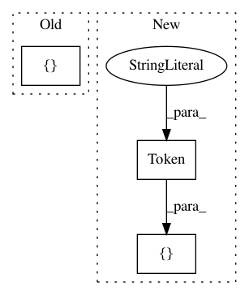

0f95d969bb87f8e6abd33473edc9a58a345dc9d4,snips_nlu/tests/test_preprocessing.py,TestPreprocessing,test_should_tokenize_symbols,#TestPreprocessing#,50
Before Change
tokens = tokenize(text, language)
// Then
expected_tokens = [
Token(value="$$", start=0, end=2),
Token(value="%", start=3, end=4),
Token(value="!!", start=5, end=7)
]
self.assertListEqual(tokens, expected_tokens)
def test_space_should_by_ignored(self):
// Given
After Change
tokens = tokenize(text, language)
// Then
expected_tokens = [
Token(value="$", start=0, end=1),
Token(value="$", start=1, end=2),
Token(value="%", start=3, end=4),
Token(value="!", start=5, end=6),
Token(value="!", start=6, end=7)
]
self.assertListEqual(tokens, expected_tokens)
def test_space_should_by_ignored(self):
// Given
In pattern: SUPERPATTERN
Frequency: 3
Non-data size: 3
Instances
Project Name: snipsco/snips-nlu
Commit Name: 0f95d969bb87f8e6abd33473edc9a58a345dc9d4
Time: 2019-07-11
Author: mattgathu@gmail.com
File Name: snips_nlu/tests/test_preprocessing.py
Class Name: TestPreprocessing
Method Name: test_should_tokenize_symbols
Project Name: allenai/allennlp
Commit Name: f4eef6eeb5e11cc0464d01dd812b6a869405e8d0
Time: 2018-07-17
Author: joelgrus@gmail.com
File Name: allennlp/tests/data/token_indexers/elmo_indexer_test.py
Class Name: TestELMoTokenCharactersIndexer
Method Name: test_elmo_as_array_produces_token_sequence
Project Name: allenai/allennlp
Commit Name: 2c4a6e537126f4123de7c97f30587310d3712c06
Time: 2017-09-13
Author: mattg@allenai.org
File Name: tests/data/dataset_test.py
Class Name: TestDataset
Method Name: test_instances_must_have_homogeneous_fields